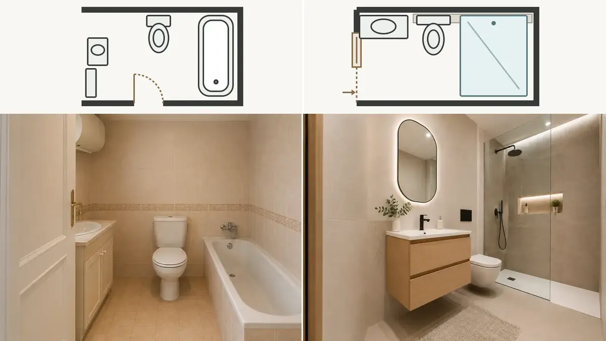
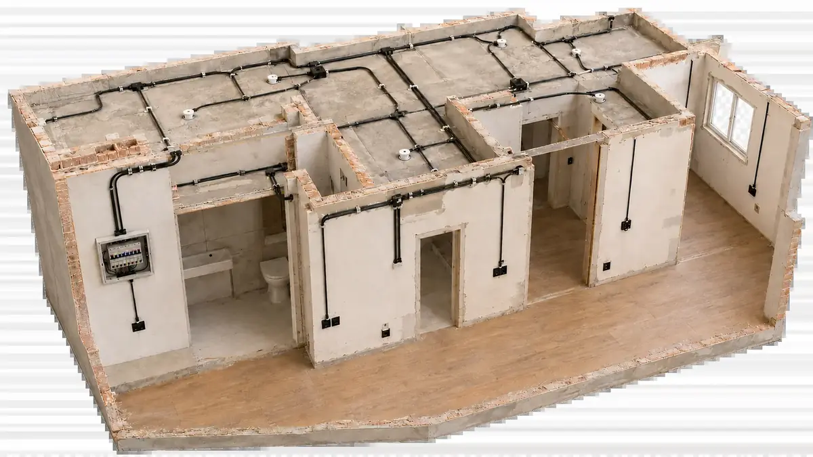
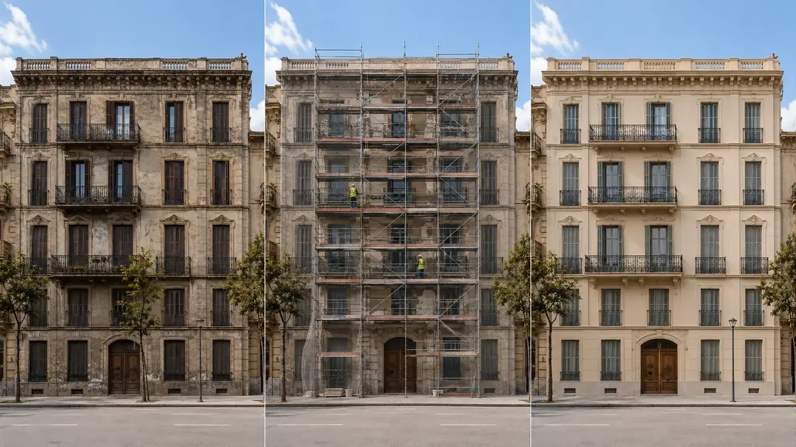

REFORMAS INTEGRALES
Reformas coordinadas de principio a fin.
Redistribución, pavimentos, pintura, instalaciones y acabados integrados en una única intervención.
Soluciones coordinadas para reformar, renovar y mantener espacios con un único punto de contacto.
Redistribución, pavimentos, pintura, instalaciones y acabados integrados en una única intervención.

Reforma de cocina con coordinación de mobiliario, electricidad, fontanería, iluminación y acabados.

Fontanería, impermeabilización, platos de ducha, revestimientos, sanitarios e iluminación.

Distribución, tabiquería, carpintería, suelos, pintura e iluminación para conseguir continuidad visual y funcional.

Adaptación y renovación de instalaciones dentro de los trabajos de reforma y mantenimiento.

Mantenimiento, rehabilitación y trabajos especializados en edificios y espacios exteriores.